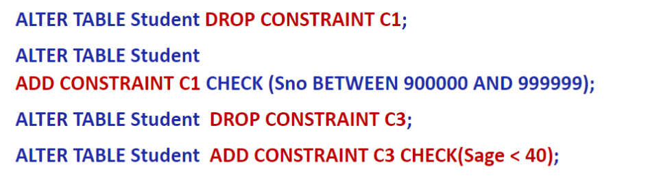

数据管理基础-汇总
1NF 横平竖直的表
2NF 没有非主属性对主属性的部分函数依赖
3NF 没有非主属性对主属性的传递函数依赖
BCNF 两种判别：1. 关系中还有左边的属性不是候选码 2. 主属性内部没有部分/传递依赖
绪论
数据库：长期储存在计算机内、有组织的、可共享的大量数据的集合。
数据库管理系统：位于用户（应用程序）与数据库（操作系统）之间的一层数据管理软件，是一种用于管理数据库的大型系统软件。
- 数据定义功能
- 数据组织、存储和管理
- 数据操纵功能
- 数据库的事务管理和运行管理
- 数据库的建立和维护功能
数据库系统：由数据库、数据库管理系统、数据库管理员、支撑系统运行所必须的系统软件和硬件平台组成的存储、管理、处理和维护数据的系统。
数据库应用系统：由数据库系统、应用开发工具、应用系统、数据库用户组成的计算机系统。
数据库用户
- 数据库管理员
- 应用开发人员
- 最终用户
数据库系统特点
- 数据结构化
- 数据的共享性高，冗余度低，且易扩充
- 数据独立性高
- 数据由数据库管理系统统一管理和控制
数据模型分类
- 概念数据模型：用户的观点来对数据和信息建模，用于数据库设计
- 逻辑数据模型：计算机系统的观点对数据建模，用于 DBMS 实现
- 物理数据模型：对数据最底层的抽象，描述数据在系统内部的表示方式和存取方法。
数据模型组成要素
- 数据结构
- 数据模型中的数据结构被称为‘数据模式’ (data schema)
- ‘数据模式’是划分不同类型数据模型的依据。
- 数据操作
- 数据约束
模式：数据库中全体数据的逻辑结构和特征的描述。一个数据库只有一个模式。
- 外模式：‘子模式’ 或 ‘用户模式’；是对数据库用户（包括应用程序员和最终用户）使用的局部数据的逻辑结构和特征的描述；一个数据库可以有多个外模式。
- 内模式（也称 ‘存储模式’或 ‘物理模式’）；是数据物理结构和存储方式的描述；是数据在数据库内部的表示方式；一个数据库只有一个内模式
二级映象
- 外模式／模式映像
- 模式：描述的是数据的全局逻辑结构
- 外模式：描述的是数据的局部逻辑结构
- 保证数据的逻辑独立性
- 当模式改变时，数据库管理员对外模式／模式映象作相应改变，使外模式保持不变
- 应用程序是依据数据的外模式编写的，应用程序不必修改，保证了数据与程序的逻辑独立性，简称数据的逻辑独立性
- 模式／内模式映像
- 定义了数据全局逻辑结构与存储结构之间的对应关系。
- 数据库中模式／内模式映象是唯一的
- 保证数据的物理独立性
- 当数据库的存储结构改变了（例如选用了另一种存储结构），数据库管理员修改模式／内模式映象，使模式保持不变。
- 应用程序不受影响。保证了数据与程序的物理独立性，简称数据的物理独立性。
关系数据模型
‘域’是一组具有相同数据类型的值的集合
笛卡尔积
元组：笛卡尔积中每一个元素（d1, d2, …, dn）叫作一个 ‘n 元组’ (n-tuple)
分量：笛卡尔积元素（d1, d2, …, dn）中的每一个值 di 叫作一个 ‘分量’
基数：一个域允许的不同取值个数称为这个域的‘基数’
关系：给定一个域的序列 D1, D2, …, Dn (其中可能存在相同的域)，笛卡尔积 D1 × D2 × … × Dn 的子集叫做在域 D1, D2, …, Dn 上的关系，表示为 R(D1, D2, …, Dn)（ 或简写为关系 R）
码 (Key)、候选码 (Candidate key)：若关系中的某一属性组的值能唯一地标识一个元组，而其所有的真子集都不能，则称该属性组为关系的 ‘候选码’，简称 ‘码’
全码：由关系中的所有属性构成的属性组是这个关系的候选码
主码： 在一个关系中，可以选择一个候选码作为该关系的 ‘主码’。是关系数据库管理系统（SQL）中才有的概念。
主属性：候选码中的诸属性称为该关系的 ‘主属性’
关系的类型
- 基本关系（基本表/基表）：实际存在的表
- 查询表
- 视图表：由基本表或其他视图表导出的表, 是虚表, 结果数据也不需要持久存储。
‘表’（包括基本表、基表、查询表、视图表）的概念，一般只在关系数据库管理系统（即 SQL 语言）中使用；
关系模型是一种逻辑数据模型，不涉及数据的物理存储，在关系模型理论中， 其数据结构只有 ‘关系’；
关系是元组的集合
关系模式是关系的“型”，元组集合是关系的“值”
关系模式是对关系的描述
元组集合的结构
- 属性构成
- 属性来自的域
- 属性与域之间的映象关系
关系模式的形式化表示：R (U, D, DOM, F)
关系数据库：在一个给定的应用领域中，所有关系的集合构成一个关系数据库
关系的完整性
- 实体完整性：关系中元组（二维表中的行） 的唯一性。
- 参照完整性：若属性（或属性组）F 是基本关系 R 的外码, 它与基本关系 S 的主码 Ks 相对应（基本关系 R 和 S 不一定是不同的关系），则对于 R 中每个元组在 F 上的值必须为：或者取空值（𝐀 的每个属性值均为空值）；或者等于 S 中某个元组的主码值
- 用户定义的完整性: 针对某一具体关系数据库的约束条件，反映某一具体应用所涉及的数据必须满足的语义要求
关系代数
关系操作
- 集合操作：并、交、差、笛卡尔积
- 专门的连接操作：选择、投影、连接、除
- 5 种基本操作：选择、投影、并、差、笛卡尔积
基本运算：并 差 笛卡尔积 选择 投影
扩充运算：交 -连接 自然连接 外连接 左/右外连接 除
事务
事务 (Transaction) 是用户定义的一个数据库操作序列，这些操作要么全做，要么全不做，是一个不可分割的工作单位。
——为了确保实现数据库的数据完整性 (integrity of the database)
事务启动：隐式方式
- 由数据库管理系统来决定，何时为何用户启动一个新的事务
事务结束
- 用户调用 commit 或 rollback 命令，显式地结束当前事务
- 由数据库管理系统强行结束一个用户的当前正在运行中的事务
事务结束方式
- COMMIT
- 事务正常结束
- 提交事务的所有操作（读+更新）
- 被提交的事务对数据库的所有更新结果被写回到磁盘上的物理数据库中，确保事务执行结果的持久化
- ROLLBACK
- 事务异常终止
- 事务运行的过程中发生了故障，不能继续执行
- 数据库管理系统将负责撤销被异常终止的事务对数据库的所有已完成的操作，并将数据库中的数据回退到事务开始时状态
事务的启动方式
- 数据定义命令 (DDL)
- 将系统设为自动提交方式（打开自动提交标志）
- 数据操纵命令 (DML)
保存点 (savepoint)
- 在事务的执行过程中，用户可以为该事务设置若干个保存点
- 用户事务可以使用 Rollback 命令将当前事务回退到前面的某个保存点 sp，放弃“在保存点 sp 之后，回退操作之前”执行过的对数据库的所有访问操作， 并继续执行当前事务
- 不带保存点的回退操作将结束并放弃整个事务
SQL
设置事务的运行方式：
- 设置事务的自动提交命令：SET AUTOCOMMIT ON | OFF ;
- 设置事务的类型：SET TRANSACTION READONLY | READWRITE ;
- READONLY 只能执行对数据库的‘读’操作
- 设置事务的隔离级别：SET TRANSACTION ISOLATION LEVEL READUNCOMMITTED | READCOMMITTED | READREPEATABLE | SERIALIZABLE ;
- READUNCOMMITTED：未提交读
- 不需要申请任何类型的封锁，因而可能会‘读’到其他并发事务未提交的修改结果
- 禁止一个事务以该方式去执行对数据的 ‘写’ 操作，以避免与其它并发事务的 ‘写’ 冲突现象
- READCOMMITTED：提交读
- 在‘读’一个数据对象 A 之前，需要先申请并获得数据对象 A 上的‘共享性’封锁， 在‘读’操作执行结束之后立即释放该封锁
- 以避免读取到其它并发事务未提交的修改结果
- READREPEATABLE：可重复读
- 在 ‘读’ 数据对象 A 之前需要先申请并获得数据对象 A 上的 ‘共享性’ 封锁，并将该封锁维持到当前事务的结束
- 可以避免其它的并发事务对当前事务正在使用的数据对象的修改
- SERIALIZABLE：可序列化 (可串行化)
- 并发事务以一种可串行化的调度策略实现其并发执行，以避免它们相互之间的干扰现象
- READUNCOMMITTED：未提交读
- 不管采用何种隔离级别，在一个事务以‘写’方式访问数据对象 A 之前，需要先申请并获得数据对象 A 上的‘排它性’封锁，并将该封锁维持到当前事务的结束。
ACID 特性：
- 原子性：事务中包括的诸操作要么都做，要么都不做
- 一致性：数据库中只包含已成功完成提交的事务的执行结果
- 隔离性：一个事务的执行不能被其他事务干扰
- 持久性：一个事务一旦提交，它对数据库中数据的改变就应该是永久性的。
数据库安全性
安全性控制
用户身份鉴别：系统提供的最外层安全保护措施
存取控制机制
- 定义用户权限，并将用户权限登记到数据字典中
- 合法权限检查
存取控制方法
- 自主存取控制
- 强制存取控制：对于任意一个对象，只有具有合法许可证的用户才可以存取
自主存取控制——GRANT REVOKE
用户存取权限定义
- 一个客体的 ‘属主’ 自动拥有该客体上的所有存取权限
- 拥有权限的用户可以自主地将他所拥有的权限传授给在数据库系统中注册的其他用户
- 用户只能通过上述两种方式（或之一）来获得在一个客体上的存取权限。
授权机制
- 管理员
- 用户
- 拥有自己建立的对象的全部的存取权限
- 可以使用 GRANT，把自己拥有的对象上的存取权限授予其他用户
- 被授权用户
- 如果具有“继续授权”的许可，可以把获得的权限再授予其他用户
- 所有授予出去的权限在必要时又都可用 REVOKE 语句收回
eg. GRANT UPDATE (Sno), SELECT ON TABLE Student TO U1 WITH GRANT OPTION;
REVOKE UPDATE (Sno) ON TABLE Student FROM U4 CASADE; - （U4 之前把权限授予给了 U5）若有 CASADE 则同时收回 U6 的权限，否则拒绝执行
创建用户授权
CREATE USER <username> [WITH DBA|RESOURCE|CONNECT]
- 默认 CONNECT：不能创建新用户，不能创建模式，也不能创建基本表，只能登录数据库
- RESOURCE：能创建基本表和视图，成为所创建对象的属主； 但不能创建模式，不能创建新的用户。
- DBA：超级用户，可以创建新的用户、创建模式、创建基本表和视图等；拥有对所有数据库对象的存取权限，还可以把这些权限授予一般用户
数据库角色
CREATE ROLE <角色名>;
给角色授权 权限回收
GRANT <权限> [, <权限>] … ON <对象类型> <对象名> TO <角色> [, <角色>] … ;
REVOKE <权限 >[, <权限>] … ON <对象类型> <对象名> FROM <角色> [, <角色>] …;
将角色授予 角色/用户 & 从 角色/用户 回收角色
- GRANT <角色> [, <角色>] … TO <角色or用户> [, <角色or用户>] … ;
- REVOKE <角色> [, <角色>] … FROM <角色or用户> [, <角色or用户>] …;
授予角色 WITH ADMIN OPTION
- 该语句把角色授予某用户，或授予另一个角色
- 授予者是角色的创建者或拥有在这个角色上的 ADMIN OPTION
- 指定了 WITH ADMIN OPTION 则获得某种权限的角色或用户还可以把这种权限授予其他角色或用户（即‘继续授权’许可）
授予权限 WITH GRANT OPTION
- 关于对象权限的授予权（对象权限：指数据库对象的访问权限，如表中的数据访问、存储过程的调用等）
视图机制
- 把要保密的数据对无权存取这些数据的用户隐藏起来，对数据提供一定程度的安全保护
审计
- 启用一个专用的审计日志（Audit Log）将用户对数据库的所有操作记录在上面
- 审计员利用审计日志监控数据库中的各种行为，找出非法存取数据的人、时间和内容
- AUDIT 语句：设置审计功能 & NOAUDIT 语句：取消审计功能
- eg. AUDIT ALTER, UPDATE ON SC;
数据加密
- 存储加密
- 传输加密
数据库完整性
- 数据的正确性：数据符合现实世界语义，反映了当前的实际状况
- 数据的相容性：数据库中的同一对象在不同关系表中的数据是符合逻辑的
完整性机制 - 提供定义完整性约束条件的机制
- 提供完整性检查的方法
- 违约处理
- 拒绝
- 级联 CASCADE
可能破坏参照完整性的情况及违约处理
完整性约束命名子句
定义和修改：
- 在 CREATE TABLE 语句中定义完整性约束
- 在定义完整性约束时，可以对完整性约束进行命名
- 使用 ALTER TABLE 语句来修改表中的完整性约束的定义，包括
- 定义新的完整性约束
- 删除现有的 (命名) 完整性约束
修改：

域中的完整性限制
- 可以用 CREATE DOMAIN 命令来创建新的域（用户自定义数据类型）
断言
- 可以使用 CREATE ASSERTION 语句，通过声明性断言来指定更具一般性的约束。
- 任何对断言中所涉及的关系的操作都会触发关系数据库管理系统对断言的检查，任何使断言不为真值的操作都会被拒绝执行。
CREATE ASSERTION <断言名> <CHECK 子句>;
DROP ASSERTION <断言名>;
触发器
CREATE TRIGGER <触发器名> { BEFORE | AFTER } <触发事件> ON <表名> REFERENCING NEW | OLD ROW AS <变量> FOR EACH { ROW | STATEMENT } [ WHEN <触发条件>] <触发动作体>
激活多个触发器
- 执行该表上的 BEFORE 触发器;
- 激活触发器的 SQL 语句;
- 执行该表上的 AFTER 触发器。
数据库编程
嵌入式 SQL
- 将 SQL 语句嵌入程序设计语言中，被嵌入的程序设计语言，如 C、C++、 Java，称为宿主语言，简称主语言。
（在 C 语言中）嵌入式 SQL 语句
- 带有前缀 ‘EXEC SQL’ 和后缀 ‘;’
- 使用 into 子句来获取结果元组值（SELECT … INTO … 或 FETCH … INTO …）
- 用主变量 ‘: host_var’ 保存查询结果元组中的属性值；通过前缀‘:’来区分主变量和 SQL 语言中的表名或属性名（也被称为 SQL 变量）
EXEC SQL select Sno, Sname, Sage
into : hsno, : hsname, : hsage
from Student where Sno = : givensno ;
数据库工作单元与源程序工作单元之间的通信
- 向主语言传递 SQL 语句的执行状态信息，使主语言能够据此控制程序流程，主要用 SQL 通信区实现
- 主语言向 SQL 语句提供执行参数，主要用（输入）主变量实现
- 将 SQL 语句查询数据库的结果交给主语言处理，主要用（输入）主变量和游标实现
SQL 通信区——SQLCA： SQL Communication Area
- 定义 SQLCA：EXEC SQL INCLUDE SQLCA
- 使用 SQLCA：
- SQLCA 中有一个用于存放每次执行 SQL 语句后返回当前 SQL 语句执行状态的代码变量 SQLCODE；
- 如果 SQLCODE 等于预定义的常量 SUCCESS，则表示 SQL 语句成功，否则表示出错；
- 应用程序每执行完一条 SQL 语句之后都应该测试一下 SQLCODE 的值，以了解该 SQL 语句执行情况并做相应处理
主变量： 在 SQL 语句中使用的主语言程序变量简称为主变量
指示变量：
- 是一个整型变量，是一种特殊的‘主变量’，用来“指示”相关主变量的值是否为‘空值
- 一个主变量可以附带一个指示变量
- 空格 or INDICATOR
为了使用主语言变量，必须首先在 DECLARE SECTION 部分声明这些变量
作用
- 在编译时对主语言变量与对应属性进行类型一致性检查
- 为接收从数据库返回的结果值而预先申请足够大的内存空间
游标
- 是系统为用户开设的一个数据缓冲区，用于存放 SQL 查询的执行结果
- 每个游标都有一个名字 – 游标名
- 当游标被打开后，用户可以用 SQL 语句逐一从游标中获取结果记录，并赋给主变量，交由主语言进一步处理
建立数据库连接
- EXEC SQL CONNECT TO target [AS connection-name] [USER user-name];
- 可修改 EXEC SQL SET CONNECTION connection-name | DEFAULT;
关闭
- EXEC SQL DISCONNECT [connection-name];
1 | |
注意，游标相关
- EXEC SQL DECLARE SX CURSOR FOR…
- EXEC SQL OPEN SX;
- EXEC SQL FETCH SX INTO : HSno,: Hsname,: HSsex,: HSage;
- EXEC SQL UPDATE Student
SET Sage = : NEWAGE
WHERE CURRENT OF SX; - EXEC SQL CLOSE SX;
异常处理
whenever 语句用于定义异常处理办法
最常见的执行异常是：sqlerror 和 not found
最常用的异常处理办法是： 用 goto 语句跳转到特定的语句标号处，进行异常处理
- exec sql whenever sqlerror goto report_error（语句标号）
EXEC SQL WHENEVER condition action;
- condition: SQLERROR | NOT FOUND | SQLWARNING
- action: CONTINUE | GOTO label | STOP | DO function | BREAK
不使用游标的 SQL 语句
- 说明性语句
- 数据定义语句
- 数据控制语句
- 查询结果为单记录的 SELECT 语句
- 非 CURRENT 形式的 INSERT、DELETE、UPDATE 等增删改语句
必须使用游标的 SQL 语句
- 查询结果为多条记录的 SELECT 语句
- CURRENT 形式的 UPDATE 语句
- CURRENT 形式的 DELETE 语句
CURRENT 形式的 UPDATE 或 DELETE 语句
- 在 UPDATE 语句或 DELETE 语句中要用子句 WHERE CURRENT OF <游标名>
- 表示修改或删除最近一次取出的记录，即游标指针当前指向的记录
动态 SQL
- 使用 SQL 语句主变量
- 动态参数
- 执行准备好的语句（EXECUTE）
动态参数
- SQL 语句中的可变元素
- 使用参数符号（?）表示该位置的数据在运行时设定
和主变量的区别
- 动态参数的输入不是编译时完成绑定
- 而是通过 PREPARE 语句准备主变量和执行语句 EXECUTE 绑定数据或主变量来完成
使用动态参数的步骤
- 声明 SQL 语句主变量
- 准备 SQL 语句（PREPARE）
- EXEC SQL PREPARE <语句名> FROM <SQL 语句主变量>;
执行
- EXEC SQL EXECUTE <语句名> [INTO <主变量表>] [USING <主变量或常量>];
过程化 SQL
为了能够在数据库中实现部分应用程序逻辑，需要在交互式 SQL 语言的基础上扩充部分过程式程序设计语言的成份，构成一个可编程的 SQL 语言，称为过程化 SQL，又被称为过程式 SQL、可编程 SQL。
过程化 SQL 相对于嵌入式 SQL 的优势
- 可独立编程，不再需要区分主变量与 SQL 变量
- 不需要经历从预编译到编译的处理
- 在数据库服务器内部实现数据交换与处理
过程化 SQL 的基本结构是 ‘块’
- 块之间可以互相嵌套
- 每个块完成一个逻辑操作
PL/SQL 变量定义 三种方式
- 基本数据类型
- sex BOOLEAN :=TRUE； age number (3) not null:=25；
- %TYPE
- 声明一个变量，使它的类型与某个变量或数据库表中某个列的数据类型一致
1 | |
- 记录类型定义的一般格式
- TYPE <recordtypename> IS RECORD ( <field> <datatype> [[NOT NULL]{DEFAULT|:=} <expression>] [,<field> …] );
1 | |
声明一个记录型变量，使它的类型与某个基本表的数据结构一致，用%ROWTYPE
1 | |
局部变量：在过程块中定义的变量，只能在块内引用
全局变量：在块外定义，使用时需要加’: '前缀
游标属性
- %ISOPEN 如果游标已经打开，返回 TRUE，否则返回 FALSE。
- %FOUND 如果最近一次使用 FETCH 语句，有返回结果则为 TRUE，否则为 FALSE;
- %NOTFOUND 如果最近一次使用 FETCH 语句，没有返回结果则为 TRUE，否则为 FALSE;
- %ROWCOUNT 数值型。描述的是到目前为止实际从游标工作区取的记录数。
T-SQL
局部变量
- 用户自己定义的变量，用于在语句之间传递数据
- 以@开头
全局变量 - 是系统定义的变量，用于存储系统的特定信息
- 用户不能建立全局变量，也不能修改其值
- 以@@开头
1 | |
存储过程
用过程化 SQL 编写的过程，经编译和优化后存储在数据库服务器中，因而被称为 ‘存储过程
创建 CREATE [OR REPLACE] PROCEDURE 过程名 ([参数 1, 参数 2,…]) AS <过程化 SQL 块>;
1 | |
执行存储过程：CALL/PERFORM PROCEDURE 过程名 ([参数 1, 参数 2,…]);
数据库设计
对于一个给定的应用环境，构造（设计）优化的数据库逻辑模式和物理结构，并据此建立数据库及其应用系统，使之能够有效地存储和管理数据，满足各种用户的应用需求，包括信息管理要求和数据操作要求
步骤
- 需求分析
- 概念结构设计
- 概念模型：E-R 图
- 通过对用户需求进行综合、归纳与抽象，形成一个独立于具体数据库管理系统的概念数据模型
- 逻辑结构设计
- 形成外模式
- 将概念结构转换为某个数据库管理系统所支持的逻辑数据模型，并对其进行优化
- 物理结构设计
- 形成内模式
- 为逻辑数据结构选取一个最适合应用环境的物理结构，包括存储结构和存取方法
- 数据库实施
- 数据库运行和维护
需求分析
数据字典：数据项 数据结构 数据流 数据存储 处理过程
需求分析的结果：数据字典，用户需求规格说明书
概念结构设计
常用策略：自顶向下地进行需求分析 & 自底向上地设计概念结构
自底向上设计概念结构的步骤
- 第 1 步：抽象数据并设计局部视图
- 第 2 步：集成局部视图，得到全局概念结构
实体&属性
- 作为属性，不能再具有需要描述的性质。属性必须是不可分的数据项，不能包含其他属性
- 属性不能与其他实体具有联系，即 E-R 图中所表示的联系是实体之间的联系。
逻辑结构设计
把概念结构设计阶段设计好的基本 E-R 图转换为与选用数据库管理系统产品所支持的数据模型相符合的逻辑结构
关系数据模型的优化
- 关系规范化设计：确定数据依赖 + 规范化设计
- 不同关系之间冗余函数依赖的检查
- 并不是规范化程度越高的关系就越优
关系模式的分解：
- 水平：把 (基本) 关系的元组集合划分为若干子集合，定义每个子集合为一个子关系，以提高系统的效率。
- 把关系模式 R 的属性集划分解为若干子集合，形成若干子关系模式。
基本方法：
- 每个‘实体集’被转换成一个关系
- 每个‘联系’通常也被转换成一个关系
物理结构设计
数据库在物理设备上的存储结构与存取方法称为数据库的物理结构， 它依赖于选定的数据库管理系统。
步骤
- 确定数据库的物理结构，在关系数据库中主要指存取方法和存储结构;
- 对物理结构进行评价，评价的重点是时间和空间效率
扩展 ER 模型
ISA 联系
- 不相交约束
- 父类中的一个实体不能同时属于多个子类中的实体集。即父类中的一个实体最多属于一个子类实体集。
- 用 ISA 联系符号中的一个叉号“X” 来表示
- 可重叠约束
- 完全特化：父类中的每一个实体，必须是某一个子类中的实体；双线连接
- 部分特化：允许父类中的某些实体不属于任何一个子类
基数约束
- min = 1 要求 E 中的每一个实体在联系 R 中至少出现一次
- 强制参与
- min = 0 允许 E 中的某些实体在联系 R 中不出现
- 非强制参与
- max = 1 E 中的每一个实体在联系 R 中最多只出现一次
- 单值参与
- max = * 允许 E 中的某些实体在联系 R 中可以出现多次
- 多值参与
关系数据理论
函数依赖：设 R (U) 是一个属性集 U 上的关系模式，X 和 Y 是 U 的子集。若对于 R (U) 的任意一个可能的关系 r，r 中不可能存在两个元组在 X 上的属性值相等，而在 Y 上的属性值不等，则称“X 函数确定 Y”或“Y 函数依赖于 X”，记作 X→Y。
平法 & 非平凡：
- 非平凡，如果 X → Y 但 X ⊈ Y
- 平凡，如果 X → Y 但 X 属于 Y
完全 & 部分：
- 如果 X → Y, 并且对于 X 的任何一个真子集 X’, 都有 X’ ↛ Y, 则称 X 对 Y 完全函数依赖
传递：
- 如果 X → Y，Y ⊈ X，Y ↛ X，Y → Z，Z ⊈ Y, 则称 Z 对 X 传递函数依赖
候选码：K -F-> U，K 是 R 的一个候选码，简称码
超码：K -> U（部分 or 完全）, 则 K 是超码
- 候选码是最小的超码，候选码的真子集一定不是超码
全码：R 的所有属性 U 是 R 的码
若有多个候选码，则选定一个做为主码
主属性：包含在任何一个候选码中的属性
外码：R 中属性或属性组 X 并非 R 的码，但是另一个关系模式的码
范式
2NF：若关系模式 R ∈ 1NF，并且每一个非主属性都完全函数依赖于任何一个候选码，则 R ∈ 2NF
- 消除 非对主 的部分函数依赖
3NF：设关系模式 R(U, F) ∈ 1NF，若 R 中不存在这样的码 X、属性组 Y 及非主属性 Z（Z ⊈ Y）, 使得 X → Y，Y → Z 成立，Y ↛ X，则称 R(U, F) ∈ 3NF.
- 消除 非主属性对候选码 的传递函数依赖
BCNF：设关系模式 R(U, F) ∈ 1NF，若 X → Y 且 Y ⊈ X 时 X 必含有码，则 R(U, F) ∈ BCNF.
- 如果每一个决定属性集都包含候选码
- 性质
- 所有非主属性都完全函数依赖于每个候选码
- 所有主属性都完全函数依赖于每个不包含它的候选码
- 没有任何属性完全函数依赖于非码的任何一组属性
Armstrong 公理
基本规则
- 自反率：若 Y ⊆ X ⊆ U，则 X → Y 为 F 所蕴涵。
- 增广率：若 X → Y 为 F 所蕴涵，且 Z ⊆ U，则 XZ → YZ
- 传递率：若 X → Y 及 Y → Z 为 F 所蕴含，则 X → Z 为 F 所蕴含
推理规则
- 合并规则：若 X → Y 及 X → Z，则 X → YZ
- 分解规则：若 X → Y 及 Z ⊆ Y，则 X → Z
- 伪传递规则：若 X → Y 及 WY → Z，则 XW → Z
函数依赖集 F 的闭包
- 为 F 所逻辑蕴含的函数依赖的全体叫作 F 的闭包
属性集的闭包
计算闭包
极小函数依赖集（最小覆盖）
- F 中任一函数依赖的右部仅含有一个属性；
- F 中不存在这样的函数依赖 X → A， 使得 F 与 F − {X → A} 等价
- 不存在冗余
- F 中不存在这样的函数依赖 X → A， X 有真子集 Z 使得 F - {X → A} U {Z → A}与 F 等价
- 不存在部分函数依赖
计算最小函数依赖集
- 把右边变成单属性
- 左边是多属性的，看少一个属性能不能推出来
- 删除每个依赖，看用剩下的能不能推出来
- 把左边一样的合并
模式分解
无损连接 + 保持函数依赖
候选码计算
- 求最小函数依赖集
- 找在左/中/右出现的属性集
- 左：肯定是 右：不可能是 中
转换为 3NF 既有无损连接性又保持函数依赖的分解
- 计算极小函数依赖集
- 对 F 中的每一个函数依赖 X → Y 做如下处理
- 如果在分解 ρ 中找不到满足下述条件的关系模式 ：XY ⊆
- 则由 X 和 Y 合并构成一个新的子关系模式并加入到分解 ρ 中
- 如果关系 R 的所有候选码都没有出现在分解 ρ 的关系模式中，则任选一个候选码 K，由 K 中的属性单独构成一个关系模式加入分解 ρ
SQL
模式
- create schema 模式名 authrization 用户名 + 表/视图/授权定义子句
- drop schema 模式名 CASCADE | RESTRICT
- CASCADE 级联：删除模式的同时把该模式中所有的数据库对象全部删除
- RESTRICT 限制：如果该模式中定义了下属的数据库对象（如表、视图等），则拒绝该删除语句的执行
基本表
- 修改 alter table xxxxxx
- add 新列名 数据类型 完整性约束
- add 表级完整性约束
- drop 列名 CASCADE | RESTRICT
- drop constraint 完整性约束名 CASCADE | RESTRICT
- alter column 列名 数据类型
- 删除 drop table 表明 CASCADE | RESTRICT
索引
- create [unique] [cluster] index 索引名 on 表名 （列名 次序…）
- e.g CREATE UNIQUE INDEX SCno ON SC (Sno ASC, Cno DESC);
- drop index 索引名
查询语句
- 目标子句 SELECT [distinct] column-name-list | expressions | *
- 简单的属性投影：可以通过‘表名. 列名’的方式来指明是对哪一张表中的哪个列的投影；
- 可以将一个表达式的计算结果投影到某个目标列上；
- 可以在目标子句中对投影得到的结果列进行重命名：<column_expression> AS <colname>
- 可用‘ * ’来代替表中的所有列；
- 可添加保留字 distinct 来消除结果表中的重复元组。
- 范围子句： FROM tablename { , tablename … }
- 可以在 FROM 子句中对一个表重新命名（即定义一个别名 alias）： <table_name> <alias_name>
- 条件子句： WHERE search_condition
- 在 FROM 子句中给出的表只是表明此次查询需要访问这些表，它们之间是通过笛卡儿积运算进行合并的
- 如果需要执行它们之间的‘θ-连接’或‘自然连接’运算，则需要在 WHERE 子句中显式地给出它们的连接条件。
查询满足条件的元组
- 比较大小：=, >, <, >=, <=, !=, <>, !>, !<
- 确定范围：BETWEEN … AND … 或 NOT BETWEEN … AND …
- 确定集合：IN <值表>, NOT IN <值表>
- 字符匹配： [ NOT ] LIKE ‘<匹配串>’ [ ESCAPE ‘<换码字符>’ ]
- ESCAPE 使用换码字符将通配符转义为普通字符
- WHERE Cname LIKE ‘DB\ _ Design’ ESCAPE ‘\’
- ESCAPE 使用换码字符将通配符转义为普通字符
- 涉及空值的查询： IS NULL 或 IS NOT NULL
- 在 SQL 标准中，“IS” 不能用 “=” 代替
- 多重条件：逻辑运算符：AND 和 OR 来连接多个查询条件
对结果进行排序：ORDER BY 子句
聚集函数：
- count
- count (*)：返回集合中的元组个数\
- count (colname)：返回在 colname 属性上取值非空的元组个数
- count (distinct colname)：返回 colname 取值非空且互不相同的元组个数
- SUM, AVG, MAX, MIN 统计: 分别用于统计一组元组在某个属性上的取值的总和、平均值、最大值、最小值
三种类型统计查询语句
- 统计查询
- 没有 group by, 直接对整个查询结果进行统计计算
- 返回单条统计结果
- 分组统计查询
- 使用 group by 子句，分组进行统计计算
- 每一个‘组’返回一条统计结果
- 分组-选择统计查询
- 使用 group by 子句先分组，再用 having 子句进行‘组’的选择，最后再对符合条件的组进行统计计算
- 每一个符合 having 条件的‘组’返回一条统计结果
WHERE 子句中与嵌套查询有关的查询谓词主要有：
- expr [ NOT ] IN ( subquery ) 标量与集合量之间的属于比较
- expr θ SOME|ANY|ALL ( subquery ) 标量与集合中元素之间的量化比较
- : [ NOT ] EXISTS ( subquery ) 是否为空集的判断谓词
集合操作
- 并 UNION
- 交 INTERSECT
- 差 EXCEPT
视图
- CREATE VIEW <视图名> [(<列名> [,<列名>]…)] AS <子查询> [WITH CHECK OPTION];
- WITH CHECK OPTION：对视图进行 UPDATE，INSERT 和 DELETE 操作时要保证更新、插入或删除的行满足视图定义中的谓词条件（即子查询中的条件表达式）
- DROP VIEW <视图名> [CASCADE];
- 如果该视图上还导出了其他视图，使用 CASCADE 级联删除语句，把该视图和由它导出的所有视图一起删除。